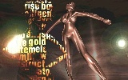
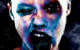

Ecstasy interview by
Doctor Yes
English traduction : Deepmind
thanks to Ecstasy
OJ> Hello Ecstasy, could you introduce
your group and yourself ?
E> Hello Doc, my name is Stephane Allegro, my non-scene nick is Clint,
and I'm 23,75 :) NomaD is my main group. It had been founded by Z, whom
we've had cool relationship when Pulpe was active ! (By the way, I wanna
greet my dear Pulpe-men !)
OJ> Why did you enter the demoscene?
E> huhu, the first demo I've seen was Unreal. Only 1
year later I discovered Second Reality ! At that point I thought: "wow,
I must create demos..." So I started alone, immediately starting to code
a 3D engine. Then I discovered Internet and "hop!", TwoFace introduced
me to aXs, and so I joined Pulpe. And here I am :) But at the beginning,
the thing which gave me the will for coding was the game Stunt Machine
on my CPC6128 :)
OJ> Immediately starting by 3D?
Gasp! What do you just think about the current massive (and without design)
use of 3D? 
E> Yes, but I did some 3D stuff at the very beginning because
I gasped in admiration watching this game...
E> All :) music, pictures, the people, the competition, making the people been in Ecstasies over their computer (That's the reason of my nick, by the way), etc.
OJ> What do you think about
guys who say the demoscene is already dead, or it should be soon?
E> huhu, people have
been saying that for one year ! and we're still there...  Those
guys have no interest in the demoscene. I don't think the demoscene is
dying ! There is so many things to be done with windows and 3DFX cards
;)) Errr... I shouldn't talk about windows: I may have ennemies now ;)
DOS is dead not the demoscene.
Those
guys have no interest in the demoscene. I don't think the demoscene is
dying ! There is so many things to be done with windows and 3DFX cards
;)) Errr... I shouldn't talk about windows: I may have ennemies now ;)
DOS is dead not the demoscene.
OJ> Many groups think windows
is not "demo compliant" ! What's your oppinion?
E> They are wrong. People are OK concerning Linux (why not?)
but not for windows. Moreover, everybody has it (as everybody had DOS),
and it's as performant as DOS for realtime calculating/animating since
hardware is managed better.
OJ> Have you any planned windows
releases?
E> With NomaD ?
OJ> Yes, or another group ;-)
E> Sure we have! There's a win32 version of Squeezed as for
each of our future prods. Next year, we'll do only win32 prods, na ! :)
OJ> Did you came at Wired ? 
E> I cannot commit myself. Either I'll take my holidays this
Summer, or I'll go to the WiReD !
OJ> Bon, maintenant place aux
traditionnels greetings.
E> greets come to axs,
katana, redbug, magicfred, nytrik, SMK, DrYes, frigo, skal, roudoudou,
made, skal, patapom, and all I've forgotten (LTP2,#demofr, etc, etc, etc.).
and to NomaD, of course !
OJ> Thanks a lot! See you soon on our
screens :)
Ecstasy is one of
NomaD coders.

His e-mail:
stephane.allegro@????
<< ...
the thing which gave me the will for coding was the game
Stunt Machine on my 6128...
>>
<< ... DOS
is dead not the demoscene
... >>